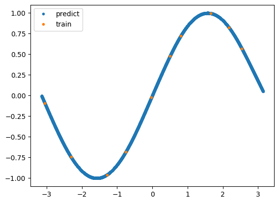

Example1¶
This is example 1. In this example, we build a Gaussian process regression surrogate model without transition learning. We then check the validity of its contribution. The test data is evaluated using the R2 indicator.
First, we define the formulas to be covered by the surrogate model. For simplicity, we assume that the equation consists of a sin function and a linear function.
[1]:
import numpy as np
def target_function(x1, x2):
return np.sin(x1) + 0.001*x2
Next, input points are sampled and we create training data.
[21]:
import TL_GPRSM.utils.sampling as sampling
train_x = sampling.latin_hypercube_sampling(10, 2, False)
train_x = sampling.uniform_scaling(train_x, scale_mins=np.array([-np.pi, -np.pi]), scale_maxs=np.array([np.pi, np.pi]))
train_y = target_function(train_x[:,0], train_x[:,1])[:,np.newaxis]
print(train_x.shape, train_y.shape)
(10, 2) (10, 1)
GPR surrogate model is constructed and trained.
[22]:
import TL_GPRSM.models.GPRSM as GPRSM
gprsm = GPRSM(train_x, train_y, kernel_name="Matern52", is_ard=True)
gprsm.optimize(max_iter=1e4, num_restarts=5)
Optimization restart 1/5, f = 0.23685040920414835
Optimization restart 2/5, f = 0.23685085608053136
Optimization restart 3/5, f = 0.23686404141560313
Optimization restart 4/5, f = 0.236850099616551
Optimization restart 5/5, f = 0.23686213350079122
Check the ARD contribution. I think you can see the contribution of x2 is very small.
[23]:
ard_contribution = gprsm.get_ard_contribution()
print(ard_contribution)
[9.99992393e+01 7.60716883e-04]
Create test data and predict data by GPRSM.
[24]:
test_x = sampling.latin_hypercube_sampling(10000, 2, False)
test_x = sampling.uniform_scaling(test_x, scale_mins=np.array([-np.pi, -np.pi]), scale_maxs=np.array([np.pi, np.pi]))
test_y = target_function(test_x[:,0], test_x[:,1])[:,np.newaxis]
predict_mean, predict_var = gprsm.predict(test_x)
Evaluate predicted values with r2 index.
[25]:
import TL_GPRSM.utils.metrics as metrics
r2_index = metrics.r2_index(test_y, predict_mean)
print(r2_index)
0.9998653442867246
Plot the predicted values with matplotlib.
[26]:
import matplotlib.pyplot as plt
plt.plot(test_x[:,0], predict_mean, ".", label="predict")
plt.plot(train_x[:,0], train_y, ".", label="train")
plt.legend()
plt.show()
